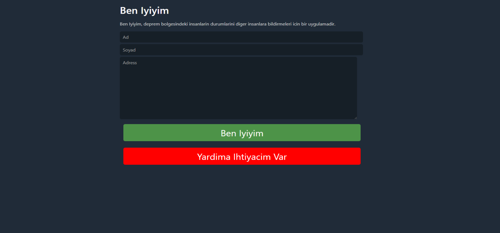

Deprem Yardim
For those under debris, those in need of food or shelter.

Ben Iyiyim
It allows people in the earthquake area to report their situation to other people.
Afet Destek
For those under debris, those in need of food or shelter.
Afet.in
Created to help disaster-affected people find jobs and internships.
Yakinimi Bul
A hospital data list for those who haven't heard/find from their family.